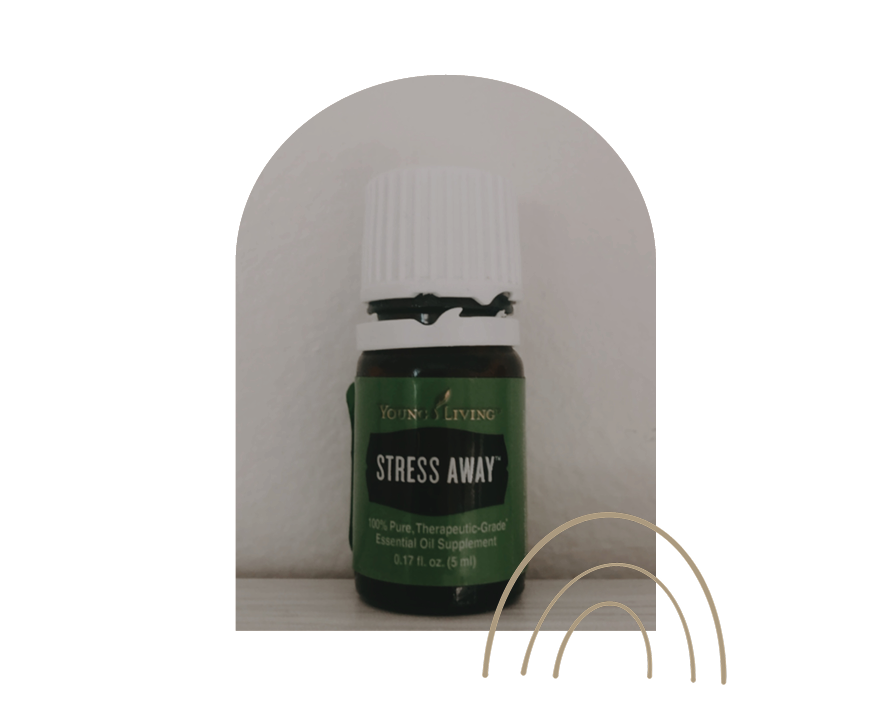

topical use
every morning, i apply a variety of oils before i start my day. when applied topically, oils enter your bloodstream and are able to circulate around the body.
frankincense
every oil user has that one oil that made them truly believe in their power. for me, that was frankincense. my favorite and most used oil, i probably have a bottle of frankincense in reach always. benefits: amazing for skin, helps with stress, perfect for grounding purposes
use: i apply a drop of frankincense either the back of my neck, right where my brain stem ends, or to the crown of my head

stress away
benefits: provides feelings of calm, peace, relaxation and helps to balance equilibrium and stress
use: i roll stress away right onto my wrists
idaho blue spruce
my latest favorite!
benefits: stimulates feelings of peace and balance, helps to release emotions and raises one's frequency
use: i apply a drop to the crown of my head every morning
valor
described by many as "courage in a bottle"
benefits: inspire feelings of positivity, encouragement and confidence as well as align and balance the body
use: i roll valor onto my jawline to release tension or use on the bottom of my feet
peppermint
benefits: relief from headaches/migraines, provides energized focus, relieves tense muscles
use: rub onto temples (avoiding eyes) or massage a drop onto your scalp
rc
benefits: fights congestion and sickness as well as allergies (great for breathing help when fighting covid)
use: place a drop or two in the palms of your hands, create a tent over your nose and inhale deeply. if super congested, drop onto shower floor to create a cleansing steam
digize
benefits: helps with digestive problems
uses: i mix digize with a carrier oil and roll around belly button
joy
benefits: brings about joyful feelings, fighting against negative emotions, specifically used by many for grief and depression
use: i rub 1-2 drops right over my heart
i could talk forever about different oils and their benefits/uses. the ones listed above are what i use on the daily, but depending on my needs for the day, i'm always grabbing other ones as well!